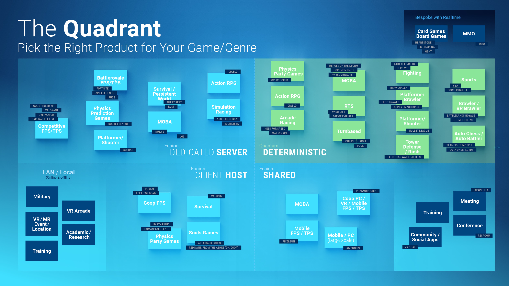
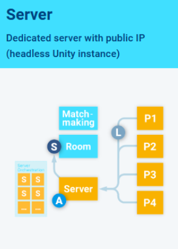
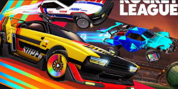
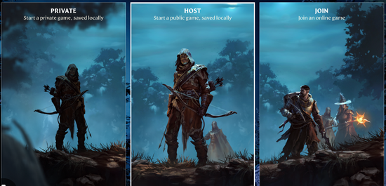
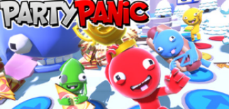
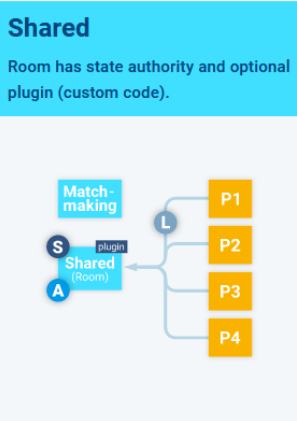
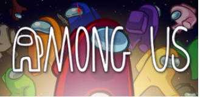

First Android Game - Part 24 - Photon Fusion
Feb 4, 2024
This is part 24 of making my first Android Game. If you missed part23, you can find it here.
Photon Fusion 2.0 is Unity Verified! Read the blog here. Download from the asset store here Read the documentation here. The unfortunate news for us is that Photon PUN is deprecated. The great news is I get to learn more new topics! There are different modes to use as shown in the quadrant below. We will focus on Fusion only. We will be using the term State Authority. This means who has the power to manage gameobjects. In other words who has "authority" on how gameobjects are managed

First there is Server mode. According to the documentation: This means the server has full and exclusive State Authority over all objects. In other words, the server controls all the spawned objects. The clients can MODIFY networked objects by sending their input to the server, the server reacts to that input or by requesting a change using an RPC. Photon does not provide servers for hosting a dedicated Fusion server application, therefore the developers must create a server machine or a cloud hosted server.

Server mode game examples are: Moba Games(Dota2, LOL), Battle royale FPS/TPS (Fortnite), Physics Prediction Games (Rocket League), Action RPG(Diablo), Competitive FPS/TPS(Overwatch)

Second is Host mode. The host acts as both server and a client. Whoever is the first to join the game usually becomes the host. The host has state authority over all the network objects. If the host loses connection, you can transfer state authority to a new client. This is NOT automatic in HOST mode and requires special handling in the client code

Host mode game examples are: Coop FPS(Left for Dead), Survival (Valheim), Physics Party Games (Party Panic, Human Fall Flat), Souls Games (Apex Dark Souls, Remnant From the Ashes), Military, VR/MR/Event/Location, VR Arcade, Academic/Research, Training, 2 Player games

Third is Shared mode. I will most likely use this mode as it is simliar to Photon PUN which I used for tomato vs potato. How is it similar? Each client initially has State Authority over objects they spawn and can release the State Authority to other clients. Clients may be allowed to take State Authority at will. For instance, when each player joins a game like the tomato vs potato game, each player can spawn bullets. Each bullet is owned by that player.

Host mode game examples are: Moba Games, Coop PC/VR/Mobile/FPS/TPS (Phasmophobia), Mobile FPS/TPS (Pixel Gun, Mobile/PC-Large Scale (Among Us), Training, Meeting (Space Hub), Community/Social Apps(VR Chat">), Conference (Rec Room)

Summary: Biggest takeaways - Server requires dedicated server so there is cost there. Host: Good for physics, and 2 player games. Shared: Less latency compared to Host. More cost efficient compared to other modes
 Recent blogs
See all blogs
Recent blogs
See all blogs